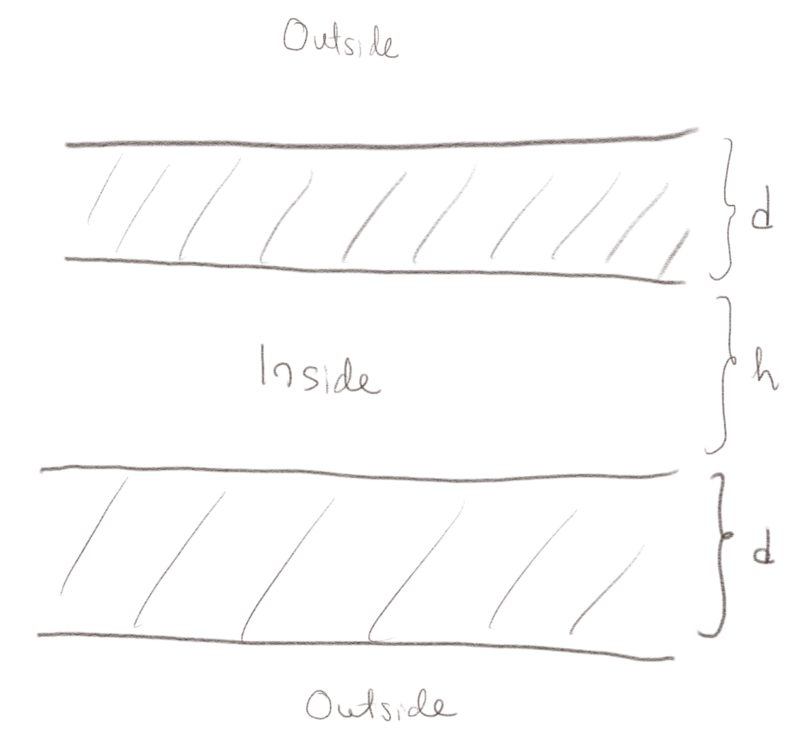
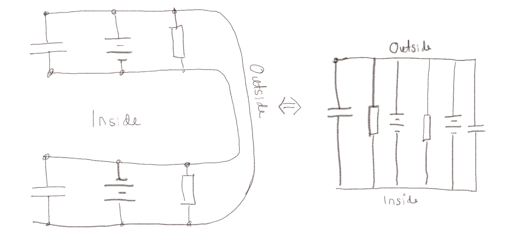

(Lærebok 9.3)
a) Hvordan vil modellen endres hvis vi i stedet modellerer en kuleformet celle, hvor cellemembranen er et kuleskall med en tykkelse \( d \)?
Modellen vil være den samme, men verdiene for \( C \) og \( R \) vil bli andre og vil avhenge av radius \( a \) i cellen og tykkelsen \( d \) av cellemembranen.
b) Hvordan vil modellen endres hvis vi i lager en modell som består av to membraner som vist i figuren?

Vi får nå et nytt system med to membraner. Innsiden av begge membranene vil være på det samme potensialet og utsiden av de to membranene vil være på det samme potensialet. Vi må derfor legge til en kapasitans, et batteri og en resistans til i parallel som vist i figuren under:

Dette betyr at vi må endre \( R \) til \( R/2 \) fordi to motstander i parallel betyr at den totale motstanden blir \( 1/R_T = 1/R + 1/R \) og \( R_T = R/2 \). Det betyr at vi må endre \( C \) til \( 2C \) fordi to kondensatorer i parallel blir \( C_T = C + C \). Og det betyr at vi ikke må endre spenningskilden (batteriet) fra \( e \) to \( e \) fordi to batterier i parallel gir den samme spenningen som ett batteri.
c) Gir det noen mening å finne tidsutviklingen til f.eks. strømmen eller spenningen i dette systemet slik det er modellert? Forklar hvordan du tenker.
Slik denne modellen er beskrevet vil spenningen over kondensatoren være gitt av batteri-spenningen. Det betyr at ladningen på kondensatoren vil være gitt som \( Q = C e \) hele tiden. Slik modellen er vil det gå en konstant strøm \( I = e/R \) gjennom motstanden og ionepumpen. Det er kanskje ikke realistisk. Vi vil forvente oss at det vil kunne ta litt tid å lade opp systemet hvis man kobler til ionepumpen. Men for å få til dette må vi gjøre noen justeringer i modellen, f.eks. ved å innføre en indre motstand \( r \) i ionepumpen eller andre modifikasjoner i modellen. Det er her viktig å skille mellom hva som skjer i modellen og hva som skjer i det virkelige systemet. Hvis vi ikke synes modellen representerer det virkelige systemet må vi justere eller forbedre modellen.
(Lærebok 9.3.2)
a) Hvordan ville likningene $$ \begin{eqnarray} C\frac{\d V_i}{\d t} &=& - \frac{V_i}{R} + \frac{V_{i+1}-2V_i + V_{i-1}}{r} \\ C\frac{\d V_1}{\d t} &=& - \frac{V_1}{R} + \frac{V_{2}-2V_1 + V_{0}(t)}{r} \\ C\frac{\d V_N}{\d t} &=& - \frac{V_N}{R} + \frac{V_{N-1}-V_N}{r} \end{eqnarray} $$ bli endret hvis kabelen dannet en ring i stedet for en linje?
Det at systemet er en ring betyr at \( V_{N} \) er til venstre for \( V_1 \) og at \( V_1 \) er til høyre for \( V_N \).
Dette er egentlig enklere enn man kanskje skulle tro. Vi behøver da ikke ha spesialbehandling av den venstre og høyre siden, men må huske på det som står i hintet, at \( V_0 \) da skal erstattes med \( V_N \) og at \( V_{N+1} \) skal erstattes med \( V_1 \). Dette kan gjøres med en modulu-operator eller det kan gjøres med if-statements i koden.
Dessuten må vi tenke på hva vi vil gjøre med det påtrykte signalet. Hvordan skal dette komme inn i systemet? Det kan f.eks. gjøres ved å legge til en tilleggs-spenning til en av nodene, som da vil bli som en omvendt ione-kanal som gir en spenning inn i systemet, eller man kan si at f.eks. node \( V_1 \) ikke finnes ved å løse differensial-likningen, men i stedet er gitt som \( V_s(t) \) som en ytre spenningskilde.
Vi kan skrive om likningen $$ \begin{equation} C\frac{\d V_i}{\d t} = - \frac{V_i}{R} + \frac{V_{i+1}-2V_i + V_{i-1}}{r} \; . \tag{6} \end{equation} $$ til en likning for ladningene \( Q_i \) ved å innføre at \( C = Q_i/V_i \) og dermed \( V_i = Q_i/C \). Da får vi: $$ \begin{equation} \frac{\d Q_i}{\d t} = - \frac{Q_i}{CR} + \frac{Q_{i+1}-2Q_i + Q_{i-1}}{Cr} \; , \tag{7} \end{equation} $$ hvor \( CR = T \) og \( Cr = \tau \) er to karakteristiske tider for systemet.
Anta først at \( r \rightarrow \infty \).
a) Hvilken situasjon kan dette svare til?
At \( r \) blir stor betyr at det ikke vil gå noen strøm langsmed kabelen, slik at de forskjellige elementene ikke blir koblet sammen. Hvert enkelt element vil derfor oppføre seg uavhengig av de andre.
b) Beskriv oppførselen til systemet i dette tilfellet.
Hvert enkelt element vil beskrives av $$ \begin{equation} \frac{\d Q_i}{\d t} = - \frac{Q_i}{T} \tag{8} \end{equation} $$ slik at oppførselen blir \( Q_i(T) = Q_i(0) e^{-t/T} \), altså en eksponensiell reduksjon. Det som skjer er at vi starter med en viss ladning på overflaten av membranen som så gradvis vil strømme gjennom membranen til ladningsforskjellen blir null og systemet blir i likevekt.
Anta så at \( r \) er endelig, mens \( R \rightarrow \infty \).
c) Hvilken situasjon kan dette svare til?
Dette betyr at det ikke er noen strøm gjennom membranen. Det er derfor ikke noe tap av ladning til omgivelsene. Ladningen blir derfor bevart i prosessen. Det eneste som skjer er at ladningen vil transporteres langsmed kabelen uten at den forsvinner ut.
d) Hvordan vil ladningsfordelingen se ut i det stasjonære tilfellet?
I det stasjonære tilfellet er det ingen tidsavhengighet slik at \( \d Q_i/\d t= 0 \) og ladningsfordelingen er gitt av $$ \begin{equation} \frac{Q_{i+1}-2Q_i + Q_{i-1}}{Cr} = 0 \tag{9} \end{equation} $$ Dette svarer til at den annenderiverte av \( Q \) er null: $$ \begin{equation} \frac{\partial^2 Q}{\partial x^2} = 0 \tag{10} \end{equation} $$ Vi kjenner igjen dette som Laplace likning. Vi vet at i en dimensjon vil denne kun ha løsninger som er linjeære: \( V(x) = Ax + B \), hvor grensebetingelsene bestemmer \( A \) og \( B \).